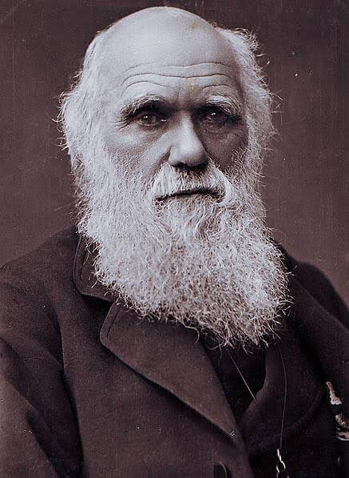
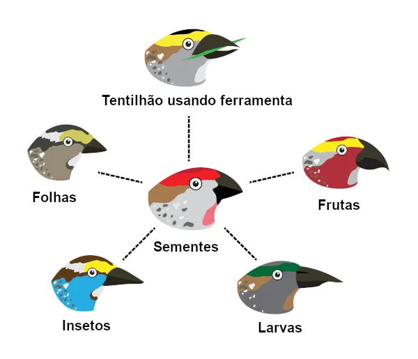

A evolução biológica é o processo pelo qual as populações de organismos se modificam ao longo das gerações. Esse conceito é o pilar fundamental da biologia moderna, explicando como a incrível diversidade de vida na Terra se desenvolveu a partir de um ancestral comum.
1. Charles Darwin e o Marco da Biologia
Em 1859, o naturalista britânico Charles Darwin publicou sua obra-prima, "A Origem das Espécies". Durante sua famosa viagem a bordo do navio HMS Beagle, Darwin observou a variação entre espécies em diferentes regiões, especialmente nas Ilhas Galápagos.

2. O Mecanismo da Seleção Natural
A seleção natural é o principal mecanismo impulsionador da evolução. Ela ocorre em quatro passos fundamentais:
A. Variabilidade Individual
Os indivíduos de uma mesma espécie apresentam pequenas variações em suas características físicas e genéticas.
B. Hereditariedade
Grande parte dessas variações é transmitida de pais para filhos por meio do código genético.
C. Sobrevivência do Mais Apto
Como os recursos no ambiente (alimento, espaço) são limitados, os indivíduos com variações favoráveis possuem maior chance de sobreviver e se reproduzir.

3. Evidências da Evolução
A teoria não é uma mera suposição; ela é apoiada por uma vasta quantidade de evidências científicas, incluindo registros fósseis que mostram formas intermediárias de vida, semelhanças anatômicas (estruturas homólogas) e comparações do código genético (DNA) entre diferentes organismos.